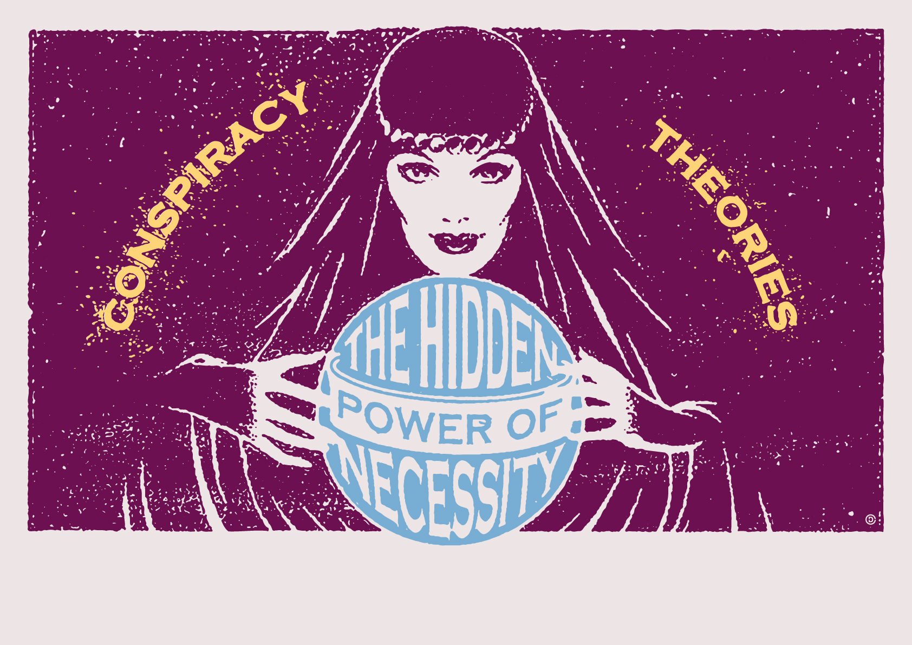

Conspiracy theories are made by conspiracy theorists and regular people who are not quite sure about something they have witnessed, typically about an event that will shape the future. They thrive with leaks and modification of facts. They are often twisted truth and contributed by people who don't believe what the government is giving them. The theorists claim that the government is hiding the truth and give explanations to these strange events to define their opinion.

The government around us dictates our life. We may think we have freedom and are allowed to do what we want. Perhaps this is just what the
government wants you to think. They could do this by implementing fake ideas or beliefs into the world in an attempt to predict thoughts and
keep everyone in check. This theory states that it is actually the government that is releasing all of these unbelievable theories that are so
crazy that they provide the perfect cover for the ones that are real. For example, if the government released several fake ridiculous conspiracy
theories then when a true theory comes along no one cares about it because it is not nearly as crazy as all the other theories.
The government could also create conspiracy theories that would scare their enemy and help them with a conflict that is happening. For example, the
Area 51 theory was "leaked" by the government to make the Soviets believe that the US had their hands on alien technology during the Cold War.
This way the Soviets would be scared to launce an offensive and would instead surrender out of fear.
Another way for the government to exploit this advantage they have would be to misdirect the public and put them even farther from the truth. For
example, Marilyn Monroe's death was allegedly caused by an overdose, but many believe it was because of her affairs with the Kennedy brother's.
Perhaps this theory came from the government who wishes to hide the potential truth that she died later from a completely different cause or even that
she is still alive.

This theory is hard to shed light on since the only way to really find out the truth is to find the source of every theory. If the government was involved then it would be near impossible to track and prove the sources of these conspiracy theories. This is because they are often formed off of bits and parts of inaccurate information. This causes it to be very difficult to determine if that inaccurate information was done purposely or truly by accident.
According to this theory, it would be near impossible to determine which theories are fact and which are fiction but it is more likely that the real ones are not as crazy as the more popular ones. This way there would be less eyes surrounding the real ones since people tend to focus on the crazier ones. If somehow this theory were to be proven true then the world would go crazy and the governments who would supply these theories would likely be overrun by a society that is now angry because of all the secrets they kept are now being revealed.

 Back to top
Back to top